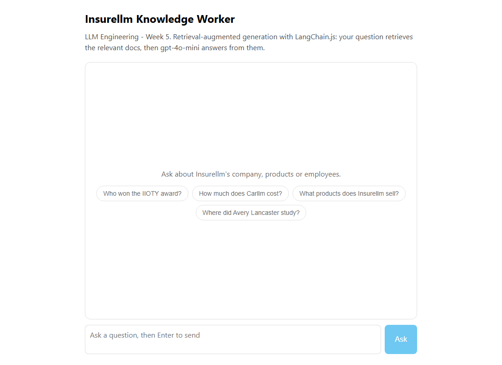

Week 5 · Day 5 — Debugging RAG and the Knowledge Worker
Fix common RAG problems (bad retrieval, wrong chunks), swap vector stores (FAISS vs Chroma), look behind LangChain's curtain, and build a personal AI knowledge worker.
Companion to Ed Donner's course · uv setup · Python + TypeScript/React · code verified against the repoThis is the last day of Week 5, and it is where retrieval-augmented generation (RAG) stops being a demo and starts being something you can actually trust. Days 1 to 4 built the machine: you loaded a knowledge base of company documents, split each one into chunks, turned every chunk into a vector, stored those vectors, and wired a retriever plus a chat model into an answer function. Today we ask the harder question: what do you do when the answer comes back wrong?
The instructor covers three things in this session, and then sets the week's project. First, a quick side trip showing how easy it is to swap one vector store for another: Chroma out, FAISS in, one line of code. Second, a look under the hood at LangChain so you can see the exact prompt it sends to the model, which is the key to debugging. Third, the most common RAG failure of all, a question whose answer is sitting right there in the documents and yet the model says "I don't know", and the simple fixes for it. Finally, the Week 5 project: point this exact pipeline at your own files and build a personal AI knowledge worker.
day4.5.ipynb and day5.ipynb as recorded in September 2024, with LangChain's
ConversationalRetrievalChain, a Gradio chat, the FAISS swap, a StdOutCallbackHandler and
k=25. The "Runs today" tabs keep that code and change only package names and models. Ed's current repository
has replaced it: day4.5 is gone, and today's day5 is a library-free knowledge worker that asks
the model to write richer chunks (with a headline and summary each), talks to Chroma directly, and adds two steps the videos
only hint at: a query rewrite before searching and an LLM re-ranker after it (the diagram
below), plus an evaluation suite.Lesson by lesson
One section per video, in the order of the course files. Each code block is what is on screen in that video (the course notebook as Ed recorded it in autumn 2024). LangChain has been reorganised since then and the model he uses has been retired, so the Python blocks have two versions: As in the video and Runs today (the same cells with today's package names and models, following Ed's repository in November 2026; every change carries a short comment naming what the video used). The TypeScript tab is a port of the "runs today" version.
Video 12 · Day 5 overview: from RAG expert to RAG master
One minute of slides: today covers LangChain's declarative language (LCEL), how LangChain works behind the scenes, and diagnosing and fixing a common RAG problem. First, though, a detour Ed "couldn't resist": another vector database, to prove how easy switching is.
Video 14 · Switching vector stores: FAISS vs Chroma
An extra notebook, week5/day4.5.ipynb: Day 4 with Chroma swapped for FAISS. Only the
store line and the low-level calls that read the vectors back change; the plots, the chain and the Gradio chat are the
same code. Ed also shows that the search is semantic: a misspelt name still finds the right record.
# imports
import os
import glob
from dotenv import load_dotenv
import gradio as gr
# imports for langchain
from langchain.document_loaders import DirectoryLoader, TextLoader
from langchain.text_splitter import CharacterTextSplitter
from langchain.schema import Document
from langchain_openai import OpenAIEmbeddings, ChatOpenAI
# from langchain_chroma import Chroma
from langchain.vectorstores import FAISS
import numpy as np
from sklearn.manifold import TSNE
import plotly.graph_objects as go
from langchain.memory import ConversationBufferMemory
from langchain.chains import ConversationalRetrievalChain
# price is a factor for our company, so we're going to use a low cost model
MODEL = "gpt-4o-mini"
db_name = "vector_db"
# Load environment variables in a file called .env
load_dotenv()
os.environ['OPENAI_API_KEY'] = os.getenv('OPENAI_API_KEY', 'your-key-if-not-using-env')
# Read in documents using LangChain's loaders
# Take everything in all the sub-folders of our knowledgebase
folders = glob.glob("knowledge-base/*")
documents = []
for folder in folders:
doc_type = os.path.basename(folder)
loader = DirectoryLoader(folder, glob="**/*.md", loader_cls=TextLoader)
folder_docs = loader.load()
for doc in folder_docs:
doc.metadata["doc_type"] = doc_type
documents.append(doc)
text_splitter = CharacterTextSplitter(chunk_size=1000, chunk_overlap=200)
chunks = text_splitter.split_documents(documents)
len(chunks)
doc_types = set(chunk.metadata['doc_type'] for chunk in chunks)
print(f"Document types found: {', '.join(doc_types)}")
# Put the chunks of data into a Vector Store that associates a Vector Embedding with each chunk
# Chroma is a popular open source Vector Database based on SQLLite
embeddings = OpenAIEmbeddings()
# Create vectorstore
# BEFORE
# vectorstore = Chroma.from_documents(documents=chunks, embedding=embeddings, persist_directory=db_name)
# AFTER
vectorstore = FAISS.from_documents(chunks, embedding=embeddings)
total_vectors = vectorstore.index.ntotal
dimensions = vectorstore.index.d
print(f"There are {total_vectors} vectors with {dimensions:,} dimensions in the vector store")
# Prework
vectors = []
documents = []
doc_types = []
colors = []
color_map = {'products':'blue', 'employees':'green', 'contracts':'red', 'company':'orange'}
for i in range(total_vectors):
vectors.append(vectorstore.index.reconstruct(i))
doc_id = vectorstore.index_to_docstore_id[i]
document = vectorstore.docstore.search(doc_id)
documents.append(document.page_content)
doc_type = document.metadata['doc_type']
doc_types.append(doc_type)
colors.append(color_map[doc_type])
vectors = np.array(vectors)
# We humans find it easier to visalize things in 2D!
# Reduce the dimensionality of the vectors to 2D using t-SNE
# (t-distributed stochastic neighbor embedding)
tsne = TSNE(n_components=2, random_state=42)
reduced_vectors = tsne.fit_transform(vectors)
# Create the 2D scatter plot
fig = go.Figure(data=[go.Scatter(
x=reduced_vectors[:, 0],
y=reduced_vectors[:, 1],
mode='markers',
marker=dict(size=5, color=colors, opacity=0.8),
text=[f"Type: {t}<br>Text: {d[:100]}..." for t, d in zip(doc_types, documents)],
hoverinfo='text'
)])
fig.update_layout(
title='2D FAISS Vector Store Visualization',
scene=dict(xaxis_title='x',yaxis_title='y'),
width=800,
height=600,
margin=dict(r=20, b=10, l=10, t=40)
)
fig.show()
# create a new Chat with OpenAI
llm = ChatOpenAI(temperature=0.7, model_name=MODEL)
# set up the conversation memory for the chat
memory = ConversationBufferMemory(memory_key='chat_history', return_messages=True)
# the retriever is an abstraction over the VectorStore that will be used during RAG
retriever = vectorstore.as_retriever()
# putting it together: set up the conversation chain with the GPT 3.5 LLM, the vector store and memory
conversation_chain = ConversationalRetrievalChain.from_llm(llm=llm, retriever=retriever, memory=memory)
query = "Can you describe Insurellm in a few sentences"
result = conversation_chain.invoke({"question":query})
print(result["answer"])
# Wrapping that in a function
def chat(message, history):
result = conversation_chain.invoke({"question": message})
return result["answer"]
# And in Gradio:
view = gr.ChatInterface(chat).launch()# imports
import os
import glob
from dotenv import load_dotenv
import gradio as gr
# imports for langchain
# (the video imported the first three from langchain.document_loaders, langchain.text_splitter
# and langchain.schema; LangChain has since moved them into their own packages)
from langchain_community.document_loaders import DirectoryLoader, TextLoader
from langchain_text_splitters import CharacterTextSplitter
from langchain_core.documents import Document
from langchain_openai import OpenAIEmbeddings, ChatOpenAI
# from langchain_chroma import Chroma
from langchain_community.vectorstores import FAISS # langchain.vectorstores in the video
import numpy as np
from sklearn.manifold import TSNE
import plotly.graph_objects as go
# the memory and chain classes now live in langchain_classic (langchain.memory / langchain.chains in the video)
from langchain_classic.memory import ConversationBufferMemory
from langchain_classic.chains import ConversationalRetrievalChain
# price is a factor for our company, so we're going to use a low cost model
MODEL = "gpt-6-luna" # gpt-4o-mini in the video (retired)
db_name = "vector_db"
# Load environment variables in a file called .env
load_dotenv()
os.environ['OPENAI_API_KEY'] = os.getenv('OPENAI_API_KEY', 'your-key-if-not-using-env')
# Read in documents using LangChain's loaders
# Take everything in all the sub-folders of our knowledgebase
folders = glob.glob("knowledge-base/*")
documents = []
for folder in folders:
doc_type = os.path.basename(folder)
# loader_kwargs added so Windows reads the files as UTF-8 (not needed on the Mac in the video)
loader = DirectoryLoader(folder, glob="**/*.md", loader_cls=TextLoader, loader_kwargs={'encoding': 'utf-8'})
folder_docs = loader.load()
for doc in folder_docs:
doc.metadata["doc_type"] = doc_type
documents.append(doc)
text_splitter = CharacterTextSplitter(chunk_size=1000, chunk_overlap=200)
chunks = text_splitter.split_documents(documents)
len(chunks)
doc_types = set(chunk.metadata['doc_type'] for chunk in chunks)
print(f"Document types found: {', '.join(doc_types)}")
# Put the chunks of data into a Vector Store that associates a Vector Embedding with each chunk
# Chroma is a popular open source Vector Database based on SQLLite
# The video used the library's default model (text-embedding-ada-002, an older model);
# text-embedding-3-small also returns 1,536 numbers per chunk.
embeddings = OpenAIEmbeddings(model="text-embedding-3-small")
# Create vectorstore
# BEFORE
# vectorstore = Chroma.from_documents(documents=chunks, embedding=embeddings, persist_directory=db_name)
# AFTER
vectorstore = FAISS.from_documents(chunks, embedding=embeddings)
total_vectors = vectorstore.index.ntotal
dimensions = vectorstore.index.d
print(f"There are {total_vectors} vectors with {dimensions:,} dimensions in the vector store")
# Prework
vectors = []
documents = []
doc_types = []
colors = []
color_map = {'products':'blue', 'employees':'green', 'contracts':'red', 'company':'orange'}
for i in range(total_vectors):
vectors.append(vectorstore.index.reconstruct(i))
doc_id = vectorstore.index_to_docstore_id[i]
document = vectorstore.docstore.search(doc_id)
assert isinstance(document, Document) # added: search() returns an error string if the id is missing
documents.append(document.page_content)
doc_type = document.metadata['doc_type']
doc_types.append(doc_type)
colors.append(color_map[doc_type])
vectors = np.array(vectors)
# We humans find it easier to visalize things in 2D!
# Reduce the dimensionality of the vectors to 2D using t-SNE
# (t-distributed stochastic neighbor embedding)
tsne = TSNE(n_components=2, random_state=42)
reduced_vectors = tsne.fit_transform(vectors)
# Create the 2D scatter plot
fig = go.Figure(data=[go.Scatter(
x=reduced_vectors[:, 0],
y=reduced_vectors[:, 1],
mode='markers',
marker=dict(size=5, color=colors, opacity=0.8),
text=[f"Type: {t}<br>Text: {d[:100]}..." for t, d in zip(doc_types, documents)],
hoverinfo='text'
)])
fig.update_layout(
title='2D FAISS Vector Store Visualization',
scene=dict(xaxis_title='x',yaxis_title='y'),
width=800,
height=600,
margin=dict(r=20, b=10, l=10, t=40)
)
fig.show()
# create a new Chat with OpenAI
# (temperature=0.7 from the video is left out: newer GPT models may not accept a custom temperature;
# reasoning_effort="none" makes gpt-6-luna answer straight away; model= is the documented name for model_name=)
llm = ChatOpenAI(model=MODEL, reasoning_effort="none")
# set up the conversation memory for the chat
memory = ConversationBufferMemory(memory_key='chat_history', return_messages=True)
# the retriever is an abstraction over the VectorStore that will be used during RAG
retriever = vectorstore.as_retriever()
# putting it together: set up the conversation chain with the GPT 3.5 LLM, the vector store and memory
conversation_chain = ConversationalRetrievalChain.from_llm(llm=llm, retriever=retriever, memory=memory)
query = "Can you describe Insurellm in a few sentences"
result = conversation_chain.invoke({"question":query})
print(result["answer"])
# Wrapping that in a function
def chat(message, history):
result = conversation_chain.invoke({"question": message})
return result["answer"]
# And in Gradio:
view = gr.ChatInterface(chat).launch()// Video 14 in TypeScript: swap the vector store, keep the rest (run: npx tsx day4_5_swap.ts)
import "dotenv/config";
import { readdirSync, statSync } from "node:fs";
import { basename, join } from "node:path";
import { DirectoryLoader } from "@langchain/classic/document_loaders/fs/directory";
import { TextLoader } from "@langchain/classic/document_loaders/fs/text";
import { MemoryVectorStore } from "@langchain/classic/vectorstores/memory";
import { BufferMemory } from "@langchain/classic/memory";
import { ConversationalRetrievalQAChain } from "@langchain/classic/chains";
import { CharacterTextSplitter } from "@langchain/textsplitters";
import { ChatOpenAI, OpenAIEmbeddings } from "@langchain/openai";
import type { Document } from "@langchain/core/documents";
import { createInterface } from "node:readline/promises";
const MODEL = "gpt-6-luna";
// Load and split exactly as on Day 2
const folders = readdirSync("knowledge-base")
.map((name) => join("knowledge-base", name))
.filter((path) => statSync(path).isDirectory());
const documents: Document[] = [];
for (const folder of folders) {
const loader = new DirectoryLoader(folder, { ".md": (path) => new TextLoader(path) });
for (const doc of await loader.load()) {
doc.metadata.doc_type = basename(folder);
documents.push(doc);
}
}
const chunks = await new CharacterTextSplitter({ chunkSize: 1000, chunkOverlap: 200 }).splitDocuments(documents);
const embeddings = new OpenAIEmbeddings({ model: "text-embedding-3-small" });
// The one line that changes. FAISS in Node needs the native faiss-node package, so this port swaps in
// LangChain.js's MemoryVectorStore, which is also an in-memory store that is rebuilt on every run.
const vectorstore = await MemoryVectorStore.fromDocuments(chunks, embeddings);
const totalVectors = vectorstore.memoryVectors.length;
const dimensions = vectorstore.memoryVectors[0].embedding.length;
console.log(`There are ${totalVectors} vectors with ${dimensions.toLocaleString()} dimensions in the vector store`);
// Prework: each store has its own low-level way to give the vectors back
const colorMap: Record<string, string> = { products: "blue", employees: "green", contracts: "red", company: "orange" };
const vectors: number[][] = [];
const texts: string[] = [];
const docTypes: string[] = [];
const colors: string[] = [];
for (const item of vectorstore.memoryVectors) {
vectors.push(item.embedding);
texts.push(item.content);
docTypes.push(String(item.metadata.doc_type));
colors.push(colorMap[String(item.metadata.doc_type)]);
}
// The RAG plumbing is identical: asRetriever() works on any vector store
const llm = new ChatOpenAI({ model: MODEL, reasoning: { effort: "none" } });
const memory = new BufferMemory({ memoryKey: "chat_history", returnMessages: true });
const retriever = vectorstore.asRetriever();
const conversationChain = ConversationalRetrievalQAChain.fromLLM(llm, retriever, { memory });
const query = "Can you describe Insurellm in a few sentences";
const result = await conversationChain.invoke({ question: query });
console.log(result.text);
// A terminal chat instead of Gradio: try a misspelt name, e.g. "What did averi do before?"
const rl = createInterface({ input: process.stdin, output: process.stdout });
while (true) {
const message = await rl.question("You: ");
if (!message.trim()) break;
console.log((await conversationChain.invoke({ question: message })).text);
}
rl.close();Line by line
Line numbers follow the As in the video block.
| Line(s) | Code | What it does & why |
|---|---|---|
| 8-20 | # from langchain_chroma import Chromafrom langchain.vectorstores import FAISS | Day 4's imports with one swap: Chroma is commented out "so I can't cheat", and FAISS (Facebook AI Similarity Search) comes in. FAISS has a CPU and a GPU build; Ed installed the CPU one. |
| 24-52 | MODEL … doc_types = set(...) | Everything up to the chunks is unchanged: 123 chunks, four types. |
| 61-65 | # BEFORE ... Chroma.from_documents(...)vectorstore = FAISS.from_documents(chunks, embedding=embeddings) | The one line that changes. Same construct, same chunks, same embeddings; no persist_directory, because FAISS keeps its index in memory and does not save it to disk. (There is no delete step either: each run starts empty.) |
| 67-70 | vectorstore.index.ntotal / vectorstore.index.d | FAISS's own way to ask how many vectors it holds and how long each is: 123 vectors, 1,536 dimensions, the same as Chroma because the same embedding model made them. |
| 72-88 | for i in range(total_vectors): ... | The plot needs vectors, texts and types back out, and FAISS hands them over differently from Chroma: index.reconstruct(i) rebuilds vector i, index_to_docstore_id[i] gives its document id, and docstore.search(doc_id) returns the chunk with its text and metadata. color_map turns each type into a colour. "There might be a tighter way to do that." |
| 94-115 | TSNE(...) … title='2D FAISS Vector Store Visualization' | The Day 3 plot, unchanged except the title. (The 3-D cell is the same apart from its title too, and is left out here.) |
| 117-127 | llm, memory, retriever = vectorstore.as_retriever(), conversation_chain | Identical to Day 4: as_retriever() works on FAISS exactly as on Chroma. That is the point of LangChain's abstractions. |
| 129-131 | conversation_chain.invoke({"question":query}) | A first question to prove it runs. |
| 135-141 | def chat(...) / gr.ChatInterface(chat).launch() | The Gradio chat. Ed asks "What did Avery do before?" with the name misspelt: it still finds Avery Lancaster's HR record (Innovate Insurance Solutions), because a misspelt name produces a vector close to the real one. |
Line by line (TypeScript)
| Line(s) | Code | What it does & why |
|---|---|---|
| 2-13 | import ... | The same imports as the Day 4 port. |
| 17-31 | const folders ... … new OpenAIEmbeddings(...) | Load, split, embeddings: unchanged. |
| 35 | MemoryVectorStore.fromDocuments(chunks, embeddings) | The swapped line. LangChain.js does have a FAISS store, but it needs the native faiss-node package; the in-memory store makes the same point with no native install. |
| 37-39 | vectorstore.memoryVectors.length | This store's low-level way to count vectors and dimensions. |
| 42-51 | for (const item of vectorstore.memoryVectors) { ... } | The prework loop: each stored item holds embedding, content and metadata. |
| 55-58 | llm, memory, asRetriever(), fromLLM(...) | The RAG plumbing, identical to Day 4. |
| 65-71 | while (true) { ... } | A terminal chat in place of Gradio. |
Swapping the vector store: FAISS vs Chroma
Before the debugging, the instructor takes a short detour he calls "day 4.5" to prove how little code it takes to switch vector stores. The whole pipeline up to Day 4 used Chroma, a database that saves your vectors to disk so they survive a restart. FAISS (Facebook AI Similarity Search) is a different tool for the same job: an open-source library that keeps vectors in memory and finds the nearest ones very fast. Because LangChain wraps both behind the same interface, moving from one to the other is a single line.
New to FAISS? What it is and how it differs from Chroma
Both store the vectors for your chunks and answer the same question, "which stored vectors are closest to this query vector?", which is the semantic search at the heart of RAG. The difference is where the vectors live. Chroma is a proper database that persists to disk, so you build the index once and reopen it later. FAISS keeps the index in memory: it is extremely fast and comes in a CPU build and a GPU build, but it does not save itself to disk, so you rebuild the index each run (or save and load it yourself). For a small knowledge base either is fine; the point of the detour is that your RAG "plumbing" does not care which one you pick.The instructor also shows that the search is genuinely semantic, not text matching: he asks "what did Avery do before?" with the name misspelled and lower-cased, and the store still finds Avery Lancaster's HR record, because the misspelled question turns into almost the same vector as the real name. That tolerance for typos and paraphrases is exactly what you get from vector search and would never get from a plain keyword lookup.
Video 15 · Demystifying LangChain: LCEL and what happens behind the scenes
Slides. LangChain Expression Language (LCEL) lets you describe a chain declaratively
instead of writing the Python yourself. Ed shows his pipeline written out that way, with the same pieces as Day 4: an LLM,
memory, embeddings, a Chroma store, a retriever (here with k: 20) and the conversation chain. His verdict:
"arguably not much easier than coding directly", so the course sticks to Python. Then the plan for the rest of
the day: LangChain is no magic, it calls the store, retrieves documents and stitches them into a prompt, and callbacks will
show us that prompt.
variables:
- name: MODEL
- name: TEMPERATURE
default: 0.7
- name: PERSIST_DIRECTORY
default: 'vector_db'
components:
- name: OpenAI_LLM
type: ChatOpenAI
parameters:
temperature: ${TEMPERATURE}
model_name: ${MODEL}
- name: ConversationMemory
type: ConversationBufferMemory
parameters:
memory_key: chat_history
return_messages: true
- name: OpenAIEmbeddings
type: OpenAIEmbeddings
- name: ChromaVectorStore
type: Chroma
parameters:
documents: ${chunks}
embedding: ${OpenAIEmbeddings}
persist_directory: ${PERSIST_DIRECTORY}
- name: VectorStoreRetriever
type: VectorStoreRetriever
parameters:
vectorstore: ${ChromaVectorStore}
search_kwargs:
k: 20
- name: ConversationalChain
type: ConversationalRetrievalChain
parameters:
llm: ${OpenAI_LLM}
retriever: ${VectorStoreRetriever}
memory: ${ConversationMemory}
output:
- name: conversation_chain
from: ${ConversationalChain}Read it as a recipe: variables are settings with defaults, each component
names a LangChain class (type) and its arguments, and ${Name} plugs one component into another, so
the retriever gets the Chroma store and the chain gets the LLM, retriever and memory. It maps line for line onto the Python
from Day 4. Note that LCEL as LangChain ships it is written in Python (or JavaScript), not YAML: you join steps with the
| operator, as in prompt | llm | parser. The YAML on the slide is Ed's way of showing the
declarative idea, and you will not need either form in this course.
Video 16 · Debugging RAG: seeing the prompt and retrieving more context
Back in the real week5/day5.ipynb (a copy of Day 4 with Chroma). Ed reruns everything,
breaks the system with a question whose answer is in the documents, uses a callback to see the prompt LangChain sends,
spots that the right chunk is missing, and fixes it by retrieving 25 chunks instead of the default.
# imports
import os
import glob
from dotenv import load_dotenv
import gradio as gr
# imports for langchain, plotly and Chroma
from langchain.document_loaders import DirectoryLoader, TextLoader
from langchain.text_splitter import CharacterTextSplitter
from langchain.schema import Document
from langchain_openai import OpenAIEmbeddings, ChatOpenAI
from langchain_chroma import Chroma
import matplotlib.pyplot as plt
from sklearn.manifold import TSNE
import numpy as np
import plotly.graph_objects as go
from langchain.memory import ConversationBufferMemory
from langchain.chains import ConversationalRetrievalChain
# price is a factor for our company, so we're going to use a low cost model
MODEL = "gpt-4o-mini"
db_name = "vector_db"
# Load environment variables in a file called .env
load_dotenv()
os.environ['OPENAI_API_KEY'] = os.getenv('OPENAI_API_KEY', 'your-key-if-not-using-env')
# Read in documents using LangChain's loaders
# Take everything in all the sub-folders of our knowledgebase
folders = glob.glob("knowledge-base/*")
def add_metadata(doc, doc_type):
doc.metadata["doc_type"] = doc_type
return doc
documents = []
for folder in folders:
doc_type = os.path.basename(folder)
loader = DirectoryLoader(folder, glob="**/*.md", loader_cls=TextLoader)
folder_docs = loader.load()
documents.extend([add_metadata(doc, doc_type) for doc in folder_docs])
text_splitter = CharacterTextSplitter(chunk_size=1000, chunk_overlap=200)
chunks = text_splitter.split_documents(documents)
print(f"Total number of chunks: {len(chunks)}")
print(f"Document types found: {set(doc.metadata['doc_type'] for doc in documents)}")
# Put the chunks of data into a Vector Store that associates a Vector Embedding with each chunk
# Chroma is a popular open source Vector Database based on SQLLite
embeddings = OpenAIEmbeddings()
# Delete if already exists
if os.path.exists(db_name):
Chroma(persist_directory=db_name, embedding_function=embeddings).delete_collection()
# Create vectorstore
vectorstore = Chroma.from_documents(documents=chunks, embedding=embeddings, persist_directory=db_name)
print(f"Vectorstore created with {vectorstore._collection.count()} documents")
# Let's investigate the vectors
collection = vectorstore._collection
count = collection.count()
sample_embedding = collection.get(limit=1, include=["embeddings"])["embeddings"][0]
dimensions = len(sample_embedding)
print(f"There are {count:,} vectors with {dimensions:,} dimensions in the vector store")
# create a new Chat with OpenAI
llm = ChatOpenAI(temperature=0.7, model_name=MODEL)
# set up the conversation memory for the chat
memory = ConversationBufferMemory(memory_key='chat_history', return_messages=True)
# the retriever is an abstraction over the VectorStore that will be used during RAG
retriever = vectorstore.as_retriever()
# putting it together: set up the conversation chain with the GPT 3.5 LLM, the vector store and memory
conversation_chain = ConversationalRetrievalChain.from_llm(llm=llm, retriever=retriever, memory=memory)
# Let's try a simple question
query = "Please explain what Insurellm is in a couple of sentences"
result = conversation_chain.invoke({"question": query})
print(result["answer"])
# Wrapping that in a function
def chat(question, history):
result = conversation_chain.invoke({"question": question})
return result["answer"]
# And in Gradio:
view = gr.ChatInterface(chat).launch()
# Let's investigate what gets sent behind the scenes
from langchain_core.callbacks import StdOutCallbackHandler
llm = ChatOpenAI(temperature=0.7, model_name=MODEL)
memory = ConversationBufferMemory(memory_key='chat_history', return_messages=True)
retriever = vectorstore.as_retriever()
conversation_chain = ConversationalRetrievalChain.from_llm(llm=llm, retriever=retriever, memory=memory, callbacks=[StdOutCallbackHandler()])
query = "Who received the prestigious IIOTY award in 2023?"
result = conversation_chain.invoke({"question": query})
answer = result["answer"]
print("\nAnswer:", answer)
# create a new Chat with OpenAI
llm = ChatOpenAI(temperature=0.7, model_name=MODEL)
# set up the conversation memory for the chat
memory = ConversationBufferMemory(memory_key='chat_history', return_messages=True)
# the retriever is an abstraction over the VectorStore that will be used during RAG; k is how many chunks to use
retriever = vectorstore.as_retriever(search_kwargs={"k": 25})
# putting it together: set up the conversation chain with the GPT 3.5 LLM, the vector store and memory
conversation_chain = ConversationalRetrievalChain.from_llm(llm=llm, retriever=retriever, memory=memory)
def chat(question, history):
result = conversation_chain.invoke({"question": question})
return result["answer"]
view = gr.ChatInterface(chat).launch()# imports
import os
import glob
from dotenv import load_dotenv
import gradio as gr
# imports for langchain, plotly and Chroma
# (the video imported the first three from langchain.document_loaders, langchain.text_splitter
# and langchain.schema; LangChain has since moved them into their own packages)
from langchain_community.document_loaders import DirectoryLoader, TextLoader
from langchain_text_splitters import CharacterTextSplitter
from langchain_core.documents import Document
from langchain_openai import OpenAIEmbeddings, ChatOpenAI
from langchain_chroma import Chroma
import matplotlib.pyplot as plt
from sklearn.manifold import TSNE
import numpy as np
import plotly.graph_objects as go
# the memory and chain classes now live in langchain_classic (langchain.memory / langchain.chains in the video)
from langchain_classic.memory import ConversationBufferMemory
from langchain_classic.chains import ConversationalRetrievalChain
# price is a factor for our company, so we're going to use a low cost model
MODEL = "gpt-6-luna" # gpt-4o-mini in the video (retired)
db_name = "vector_db"
# Load environment variables in a file called .env
load_dotenv()
os.environ['OPENAI_API_KEY'] = os.getenv('OPENAI_API_KEY', 'your-key-if-not-using-env')
# Read in documents using LangChain's loaders
# Take everything in all the sub-folders of our knowledgebase
folders = glob.glob("knowledge-base/*")
def add_metadata(doc, doc_type):
doc.metadata["doc_type"] = doc_type
return doc
documents = []
for folder in folders:
doc_type = os.path.basename(folder)
# loader_kwargs added so Windows reads the files as UTF-8 (not needed on the Mac in the video)
loader = DirectoryLoader(folder, glob="**/*.md", loader_cls=TextLoader, loader_kwargs={'encoding': 'utf-8'})
folder_docs = loader.load()
documents.extend([add_metadata(doc, doc_type) for doc in folder_docs])
text_splitter = CharacterTextSplitter(chunk_size=1000, chunk_overlap=200)
chunks = text_splitter.split_documents(documents)
print(f"Total number of chunks: {len(chunks)}")
print(f"Document types found: {set(doc.metadata['doc_type'] for doc in documents)}")
# Put the chunks of data into a Vector Store that associates a Vector Embedding with each chunk
# Chroma is a popular open source Vector Database based on SQLLite
# The video used the library's default model (text-embedding-ada-002, an older model);
# text-embedding-3-small also returns 1,536 numbers per chunk.
embeddings = OpenAIEmbeddings(model="text-embedding-3-small")
# Delete if already exists
if os.path.exists(db_name):
Chroma(persist_directory=db_name, embedding_function=embeddings).delete_collection()
# Create vectorstore
vectorstore = Chroma.from_documents(documents=chunks, embedding=embeddings, persist_directory=db_name)
print(f"Vectorstore created with {vectorstore._collection.count()} documents")
# Let's investigate the vectors
collection = vectorstore._collection
count = collection.count()
sample_embedding = collection.get(limit=1, include=["embeddings"])["embeddings"][0]
dimensions = len(sample_embedding)
print(f"There are {count:,} vectors with {dimensions:,} dimensions in the vector store")
# create a new Chat with OpenAI
# (temperature=0.7 from the video is left out: newer GPT models may not accept a custom temperature;
# reasoning_effort="none" makes gpt-6-luna answer straight away; model= is the documented name for model_name=)
llm = ChatOpenAI(model=MODEL, reasoning_effort="none")
# set up the conversation memory for the chat
memory = ConversationBufferMemory(memory_key='chat_history', return_messages=True)
# the retriever is an abstraction over the VectorStore that will be used during RAG
retriever = vectorstore.as_retriever()
# putting it together: set up the conversation chain with the GPT 3.5 LLM, the vector store and memory
conversation_chain = ConversationalRetrievalChain.from_llm(llm=llm, retriever=retriever, memory=memory)
# Let's try a simple question
query = "Please explain what Insurellm is in a couple of sentences"
result = conversation_chain.invoke({"question": query})
print(result["answer"])
# Wrapping that in a function
def chat(question, history):
result = conversation_chain.invoke({"question": question})
return result["answer"]
# And in Gradio:
view = gr.ChatInterface(chat).launch()
# Let's investigate what gets sent behind the scenes
from langchain_core.callbacks import StdOutCallbackHandler
llm = ChatOpenAI(model=MODEL, reasoning_effort="none") # temperature=0.7 in the video, as above
memory = ConversationBufferMemory(memory_key='chat_history', return_messages=True)
retriever = vectorstore.as_retriever()
conversation_chain = ConversationalRetrievalChain.from_llm(llm=llm, retriever=retriever, memory=memory, callbacks=[StdOutCallbackHandler()])
query = "Who received the prestigious IIOTY award in 2023?"
result = conversation_chain.invoke({"question": query})
answer = result["answer"]
print("\nAnswer:", answer)
# create a new Chat with OpenAI
llm = ChatOpenAI(model=MODEL, reasoning_effort="none") # temperature=0.7 in the video, as above
# set up the conversation memory for the chat
memory = ConversationBufferMemory(memory_key='chat_history', return_messages=True)
# the retriever is an abstraction over the VectorStore that will be used during RAG; k is how many chunks to use
retriever = vectorstore.as_retriever(search_kwargs={"k": 25})
# putting it together: set up the conversation chain with the GPT 3.5 LLM, the vector store and memory
conversation_chain = ConversationalRetrievalChain.from_llm(llm=llm, retriever=retriever, memory=memory)
def chat(question, history):
result = conversation_chain.invoke({"question": question})
return result["answer"]
view = gr.ChatInterface(chat).launch()// Video 16 in TypeScript: see what LangChain sends, then retrieve more chunks (run: npx tsx day5_debug.ts)
import "dotenv/config";
import { readdirSync, statSync } from "node:fs";
import { basename, join } from "node:path";
import { DirectoryLoader } from "@langchain/classic/document_loaders/fs/directory";
import { TextLoader } from "@langchain/classic/document_loaders/fs/text";
import { MemoryVectorStore } from "@langchain/classic/vectorstores/memory";
import { BufferMemory } from "@langchain/classic/memory";
import { ConversationalRetrievalQAChain } from "@langchain/classic/chains";
import { CharacterTextSplitter } from "@langchain/textsplitters";
import { ChatOpenAI, OpenAIEmbeddings } from "@langchain/openai";
import type { Document } from "@langchain/core/documents";
import { ConsoleCallbackHandler } from "@langchain/core/tracers/console";
const MODEL = "gpt-6-luna";
// Load and split exactly as on Day 2
const folders = readdirSync("knowledge-base")
.map((name) => join("knowledge-base", name))
.filter((path) => statSync(path).isDirectory());
const documents: Document[] = [];
for (const folder of folders) {
const loader = new DirectoryLoader(folder, { ".md": (path) => new TextLoader(path) });
for (const doc of await loader.load()) {
doc.metadata.doc_type = basename(folder);
documents.push(doc);
}
}
const chunks = await new CharacterTextSplitter({ chunkSize: 1000, chunkOverlap: 200 }).splitDocuments(documents);
const embeddings = new OpenAIEmbeddings({ model: "text-embedding-3-small" });
const vectorstore = await MemoryVectorStore.fromDocuments(chunks, embeddings); // in memory instead of Chroma
const llm = new ChatOpenAI({ model: MODEL, reasoning: { effort: "none" } });
// Let's investigate what gets sent behind the scenes: the console handler prints every step,
// including the full prompt sent to the model
let memory = new BufferMemory({ memoryKey: "chat_history", returnMessages: true });
let retriever = vectorstore.asRetriever();
let conversationChain = ConversationalRetrievalQAChain.fromLLM(llm, retriever, { memory });
const query = "Who received the prestigious IIOTY award in 2023?";
let result = await conversationChain.invoke({ question: query }, { callbacks: [new ConsoleCallbackHandler()] });
console.log("\nAnswer:", result.text);
// The fix: k is how many chunks to use (LangChain's default is 4)
memory = new BufferMemory({ memoryKey: "chat_history", returnMessages: true });
retriever = vectorstore.asRetriever({ k: 25 });
conversationChain = ConversationalRetrievalQAChain.fromLLM(llm, retriever, { memory });
result = await conversationChain.invoke({ question: query });
console.log("\nAnswer:", result.text);Line by line
Line numbers follow the As in the video block.
| Line(s) | Code | What it does & why |
|---|---|---|
| 1-20 | # imports for langchain, plotly and Chroma … | Day 4's notebook again, with Chroma back (Ed adds matplotlib to the imports but does not use it here). |
| 24-30 | MODEL … load_dotenv() | Constants and key. |
| 37-52 | def add_metadata(doc, doc_type): ... … documents.extend(...) | A tidier version of the loading loop: a small helper sets doc_type, and a list comprehension adds the folder's documents in one go. The same cell splits the documents and prints the chunk count and the types. |
| 54-67 | Chroma.from_documents(...) | The Chroma store, built fresh. |
| 69-76 | count = collection.count() … | 123 vectors of 1,536 dimensions. (The 2-D and 3-D plot cells come next in the notebook; Ed scrolls past them, so they are left out here.) |
| 78-88 | llm, memory, retriever, conversation_chain | The Day 4 chain. |
| 90-94 | query = "Please explain what Insurellm is in a couple of sentences" | A first check that it runs. |
| 98-104 | def chat(question, history) / gr.ChatInterface(chat).launch() | The Gradio chat. "What did averi do before Insurellm?" works with Chroma too. Then Ed shows Maxine Thompson's HR record, where he himself added that she won the "prestigious IIOTY award" (Insurellm Innovator of the Year) in 2023, and asks "Who received the prestigious IIOTY award in 2023?". The answer: "I don't know." |
| 106-108 | from langchain_core.callbacks import StdOutCallbackHandler | A callback is an object LangChain notifies at every step. This one prints each step to the screen (standard out). |
| 110-116 | ConversationalRetrievalChain.from_llm(..., callbacks=[StdOutCallbackHandler()]) | The same four lines, plus a list of callbacks handed to the chain. |
| 118-121 | result = conversation_chain.invoke({"question": query}) … | The trace shows the chains entering and finishing, and the prompt that reaches GPT-4o-mini: "Use the following pieces of context to answer the user's question. If you don't know the answer, just say that you don't know, don't try to make up an answer." (a well-crafted prompt worth reusing), then the context: a few chunks from HR records, but not the one about the award. Wrong chunks in, "I don't know" out. |
| 123-130 | retriever = vectorstore.as_retriever(search_kwargs={"k": 25}) | The fix. k is how many chunks the retriever returns (LangChain's default is 4; Ed guesses three). 25 of 123 chunks is about a fifth of the data. As a rule of thumb, sending plenty of context is good: models are good at ignoring what is irrelevant (with exceptions such as the newest reasoning models, which work better with less). |
| 133 | conversation_chain = ...from_llm(...) | A new chain with the wider retriever (and fresh memory). |
| 135-139 | chat / launch() | Same question again: "Maxine received the prestigious IIOTY 2023 award." More chunks fixed it. |
Line by line (TypeScript)
| Line(s) | Code | What it does & why |
|---|---|---|
| 2-13 | import { ConsoleCallbackHandler } from "@langchain/core/tracers/console" | LangChain.js's counterpart of StdOutCallbackHandler: it logs every step, prompts included. |
| 17-33 | const folders ... … new ChatOpenAI(...) | Store and model, as in the Day 4 port. |
| 37-39 | let memory / retriever / conversationChain | let instead of const because the fix below replaces them. |
| 41-43 | invoke({ question }, { callbacks: [new ConsoleCallbackHandler()] }) | Here the handler is passed with the call, so it follows every inner step. (The Python from_llm(callbacks=...) hands it to the inner chains for you.) |
| 45-47 | vectorstore.asRetriever({ k: 25 }) | The same fix: 25 chunks instead of the default 4. |
Seeing what LangChain does under the hood
The reason Ed can debug the "I don't know" answer is that LangChain lets you print the real prompt it
builds. You attach a StdOutCallbackHandler to the chain, and when a question runs, it prints every
step, ending with the full text sent to the model: a carefully written system instruction ("Use the following
pieces of context... if you don't know the answer, just say you don't know, don't make one up"), then the
retrieved chunks as context, then the conversation history, then your question. Reading that printout is how
you discover the chunks are wrong. There is no magic in LangChain: it retrieves chunks and stitches them into a
prompt, and the callback simply shows you the stitched result.
Why a RAG answer goes wrong
RAG has two halves: retrieval (find the right chunks) and generation (write an answer from them). When an answer is wrong, the generation half is almost never the culprit. The model only sees the chunks you hand it, so if the right chunk was never retrieved, the model has no way to know the answer, and a well-written prompt will make it say "I don't know" rather than invent something. That is exactly what the instructor demonstrates: he adds a sentence to one employee's HR record ("won the IIOTY award in 2023"), asks "who received the IIOTY award?", and the model answers "I don't know" because the retriever pulled back a few chunks that did not include that sentence.
New to debugging retrieval? Where to actually look
When an answer is wrong, resist the urge to reword the prompt. Instead, print the chunks the retriever returned for that question and read them with your own eyes. One of three things will be true: (1) the right chunk is simply missing, so you need to retrieve more of them (raisek) or chunk the documents
differently; (2) the right chunk is there but buried far down the list, so a re-ranking step helps; or (3) the
fact is split awkwardly across two chunks, so more overlap between chunks keeps it whole. The instructor's own
fix for the IIOTY question was the simplest one: ask for more chunks. As a rule of thumb, modern models are
good at ignoring irrelevant context, so sending more chunks rarely hurts and often fixes the problem.k widens the net until the answer is in
it. Here the course went from 3 chunks to 25.Ed's other suggestions for when the right context is not found: change the chunking strategy (whole documents instead of chunks, smaller chunks such as 100 characters, more or less overlap) and experiment until you have a feel for too little and too much context.
Video 17 · Build your personal AI knowledge worker
The week ends with a challenge: take this exact pipeline and point it at your own information. Gather your files into a folder structure (the way the course used one folder per document type), vectorise them into Chroma, and put a chat window on top, and you have a private assistant that can answer questions across everything you have written. The instructor suggests going further by pulling in email through the Gmail API or documents from Google Drive, and notes a privacy option: if you would rather not send private data to OpenAI for embedding, you can embed locally with an open-source model (he mentions BERT, and running it yourself via Google Colab or llama.cpp). The minimum version is small, drop a few text files into the folder and ask questions about them, and the full build is laid out on the Project Build page.
You are now 62.5% of the way through the course. Next week: a new commercial project, a dataset from Hugging Face, and the step from inference to training.

There are 123 vectors with 1,536
dimensions in the vector store and draws the same clusters as Chroma. In day5, "Who received the
prestigious IIOTY award in 2023?" first gets I don't know.; the callback trace prints
> Entering new ConversationalRetrievalChain chain..., the StuffDocumentsChain and
LLMChain steps and the full prompt with its context chunks; after switching to k=25 the answer
names Maxine. With today's larger knowledge base the counts are bigger, and the exact trace text depends on your LangChain
version. The TypeScript port prints the console handler's trace and then both answers.k is too small, so raise it (the default 4 was not enough; the video uses 25).
Stale index: you edited the documents but did not rebuild the store, so it still holds the old vectors;
delete the collection and rebuild. Duplicate vectors: rebuilding Chroma without deleting the old
collection first stacks copies on top and skews retrieval. Mismatched embeddings: embedding the query with
a different model than you used for the chunks makes the vectors incomparable and retrieval returns noise.- When a RAG answer is wrong, debug retrieval, not the prompt: print the chunks that came back, and the fault is almost always that the right chunk was never retrieved.
- The simplest and most effective fix is raising
k(the number of retrieved chunks):as_retriever(search_kwargs={"k": 25})in the video; other fixes are re-chunking, more overlap, and re-ranking. - Swapping vector stores is trivial behind LangChain: Chroma persists to disk, FAISS keeps vectors in memory, and in the video it is a one-line change.
- LangChain is not magic: a callback prints the exact prompt it sends, so you can confirm the context box holds the right chunks.
- Ed's current repository goes further with a library-free knowledge worker that adds a query rewrite and an LLM re-ranker around the familiar retrieve-then-answer loop; the TypeScript tabs use the same LangChain.js chain as the Day 4 port.
- Week 5 in one line: Day 1 built a DIY RAG and met embeddings; Day 2 added LangChain loaders, the text splitter and OpenAI embeddings; Day 3 stored the vectors and visualised them with t-SNE; Day 4 assembled the full RAG chain with conversation history; and today you learned to debug it and turned it into a personal knowledge worker.